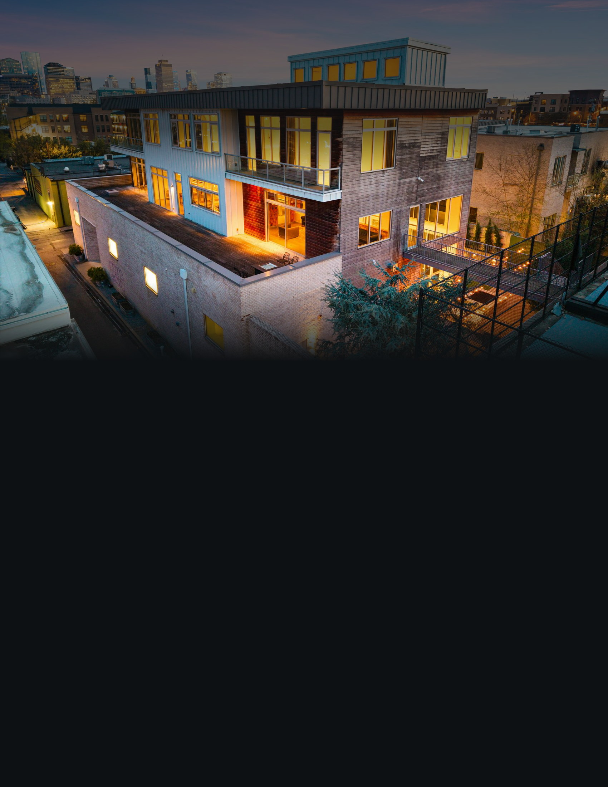
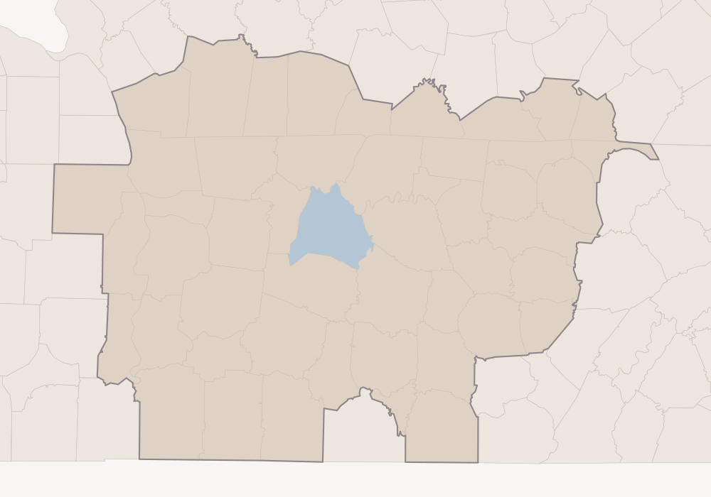
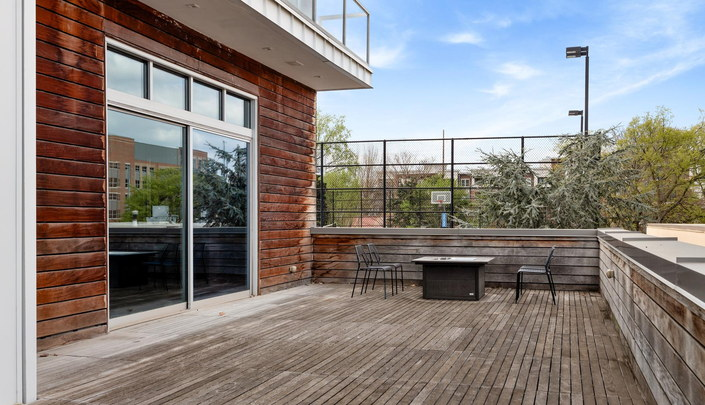

312 Madison St · Digital Billboard Strategy
A house that looks at the skyline, shown to the city it looks at.
Property
312 Madison Street, Nashville, Tennessee 37208 · Historic Germantown
List Price
$7,495,000
The Residence
Approximately 10,000 square feet · 5 ensuite bedrooms · 10 bathrooms
The Architecture
Nick Dryden, Dryden Studio · three elevator-served levels
Market
Nashville · forty-nine counties · Davidson County at the centre
Campaign Window
Thirty days, continuous
Prepared for the owner · The plan for the thirty days ahead
The Market
One television market, forty-nine counties wide.
312 Madison Street stands in Historic Germantown, on the north edge of downtown Nashville and inside Davidson County. Advertising of this kind is bought by market rather than by address, and the market this property sits in is Nashville — forty-nine counties across two states, reaching from the Kentucky line above Hopkinsville down to the Alabama border, and from the Tennessee River in the west to the Cumberland Plateau in the east.
Davidson County is drawn in blue on the map opposite. The other forty-eight counties of the market are shaded, and the whole footprint is outlined as one shape. The pale counties beyond that line sit outside this market; they are reached by the online advertising instead.

312 Madison St
Franklin
Murfreesboro
Clarksville
Hendersonville
Columbia
Cookeville
Bowling Green
Hopkinsville
Davidson County
Rest of the Nashville Market
Outside the Market
Davidson County was established from the property’s own coordinates rather than inferred from the postcode. The federal address geocoder, the federal census-block service and a point-in-polygon test of those coordinates against all two hundred and fifteen county boundaries in Tennessee and Kentucky each return Davidson, county 47037. The forty-nine-county roster of the market was taken from a published county-by-market schedule and every name on it was matched against the federal boundary file, with none unaccounted for. We describe this market by its county count rather than by a national ranking: published rankings disagree with one another and move from year to year, so the honest measure of reach is the ground it covers.
The Forty-Nine Counties49
Davidson
Bedford
Benton
Cannon
Cheatham
Clay
Coffee
DeKalb
Decatur
Dickson
Franklin
Giles
Henry
Hickman
Houston
Humphreys
Jackson
Lawrence
Lewis
Macon
Marshall
Maury
Montgomery
Moore
Overton
Perry
Pickett
Putnam
Robertson
Rutherford
Smith
Stewart
Sumner
Trousdale
Van Buren
Warren
Wayne
White
Williamson
Wilson
Allen, Ky.
Christian, Ky.
Clinton, Ky.
Cumberland, Ky.
Logan, Ky.
Monroe, Ky.
Simpson, Ky.
Todd, Ky.
Trigg, Ky.
Forty in Tennessee · nine in Kentucky, set in grey
Why The Whole Market
A buyer for a downtown house is not, in the main, coming from four hundred miles away on the strength of a roadside screen. They are already here — living in Brentwood or Franklin, working off Broadway, keeping a second place in Green Hills — or they are arriving into Nashville often enough to be driving these roads. The whole market is targeted because that is where the buyer already moves, and because the counties around Davidson hold the households that trade up into the centre of the city rather than out of it.
The Argument
The buyer already lives within sight of it.
Most houses at this price ask a buyer to leave the city to reach them. This one does the opposite. Lower Broadway is a mile and a quarter away in a straight line, Vanderbilt two, the airport under eight. The decks look back at the skyline the buyer drives home through. That is an unusual thing to be able to say, and it means the advertising does not have to travel far to find the person it is for — it has to be present, repeatedly, in the ordinary movement of the city.
01
The city is the market, not a feeder for it
The emphasis sits on Davidson County and the three counties that ring it to the south and east, because that is where a buyer for a downtown residence already is. There is no distant feeder market in this plan, because the property does not need one.
02
The architecture is the argument
A large house in Nashville is not scarce. A ten-thousand-square-foot house by Nick Dryden, built in concrete and steel behind storefront glass in Germantown, offered for the first time, is. The advertising leads with the building itself, because the building is what nothing else in this city can answer.
03
One idea per screen
A driver has a few seconds. Each frame carries the building, the price, the address and nothing else. No feature lists, no agent portrait, no logos competing with the property.
04
One address, everywhere
Every screen ends at the same short web address as the rest of the campaign, so that a glance from a car can be recovered from a phone that evening.
The Property, In Figures
10,000
Square Feet, Approx.
5 · 10
Ensuite Bedrooms · Bathrooms
3
Levels, Served By Elevator
The Targeting
Chosen by area, not by billboard.
These screens do not work the way billboards used to. We do not take one sign on one road for a month. They are bought programmatically: we tell the exchange which parts of the market to serve the property into, and it places the advertisement on whatever screens are free there while the campaign runs. There is no list of board addresses in this document, and there will not be one. What we choose is the geography.
In practice that means roadside and public digital screens across the forty-nine counties on the previous page, weighted towards the five areas below.
AreaTargeted GeographyWhy It Is Included
01
Davidson County · the downtown core, Germantown, The Gulch, East Nashville, Belle Meade, Green Hills
Highest priority
The county the property is in, and the tightest concentration of design-literate money in the state. These are the people who know Germantown already, recognise the architect’s work from other buildings here, and mention a house like this to someone who wants it.
02
Williamson County · Franklin, Brentwood, Nolensville
Highest priority
The wealthiest ground in the market, and the single most likely origin of this buyer: the household that has finished with the large lot south of town and wants to be in the city instead. Brentwood is under ten miles from the property in a straight line, Franklin eighteen.
03
The commuter ring · Sumner, Wilson and Rutherford — Hendersonville, Lebanon, Murfreesboro
High priority
The counties whose residents drive into Davidson on the roads that pass the property. Presence here is about being seen on the way in, by people for whom downtown is already a daily destination rather than a weekend one.
04
The outer arc · Montgomery, Robertson, Maury, Cheatham, Dickson — Clarksville, Columbia
Moderate priority
The next ring out, where the growth of the metropolitan area is happening and where a good many of the people who work in Nashville now live. Lower weight than the inner counties, but not absent.
05
The balance of the forty-nine, including the nine Kentucky counties
Steady presence
The plateau to the east, the river counties to the west, the Kentucky line to the north. A lower share of delivery, so that the whole market is covered for the full thirty days rather than in bursts.
Where The Emphasis Sits
Areas 01 and 02 take the largest share of delivery: one is the neighbourhood itself, the other is where the buyer most likely lives today. The commuter ring takes the next share, and the remaining counties run at a lower, steady share so that nowhere in the market is dark.
We would rather run everywhere in the market for the full thirty days at a measured weight than crowd two weeks and then disappear. One consequence of buying this way is worth saying plainly: we cannot promise a photograph of your house on a named sign at a named junction. What we can say is which parts of Tennessee and Kentucky saw it, and how often, once the month is over.

The decks the advertising leads with
In A Straight Line
Lower Broadway 1.2 mi · Vanderbilt 2.0 mi · Belle Meade 5.0 mi · Green Hills 5.1 mi · Nashville International Airport 7.4 mi · Brentwood 9.8 mi · Hendersonville 14.2 mi · Franklin 18.0 mi · Murfreesboro 31.7 mi — from the property’s coordinates; straight-line, not driving times.
What Happens Next
The month ahead, in order.
The market, the areas inside it and where the emphasis sits are decided; the reasoning is on the pages before this one. What follows is the sequence. The steps in black are settled and ours to run. The two in grey are figures that do not exist yet, left blank rather than estimated.
01
The Advertisement
Built from the photography of the building at dusk, the decks and the skyline behind them, in the Aperture setting used across the rest of the campaign.
02
Your Sign-Off
You see the advertisement and approve it before a single screen carries it. That one sign-off is yours.
03
At Launch
The campaign opens across all forty-nine counties of the Nashville market at once, weighted to Davidson and Williamson.
04
Thirty Days
Continuous through the month that follows, at a measured weight, with no dark weeks and nowhere in the market unlit.
05
Impressions
To be confirmed. We will state a figure only once an operator has committed to one in writing, and it will then be the number we are held to.
06
Performance
Nothing measured. The campaign has not begun, so there is nothing here to read yet.
07
At The Close
Once the thirty days are run, a report: which parts of Tennessee and Kentucky saw the property, and how often — whatever the operators are able to verify.
Two Things That Will Never Appear
No individual board and no screen count, at any stage. These are not applicable to a campaign bought this way: screens are served programmatically across the targeted areas, and which ones carry the advertisement varies hour by hour with what the exchange has available. We cannot promise a photograph of your house on a named sign; we can tell you the geography it ran in.
The Property, Online
Where every screen resolves.
The Rest Of The Campaign
Online advertising and a direct mail campaign run into the same part of Tennessee across the same thirty days; each is set out in its own document.
Your Agent
Alex Brandau IV
Aperture Global Real Estate
+1 615 335 5600
Alex.Brandau@ApertureGlobal.com